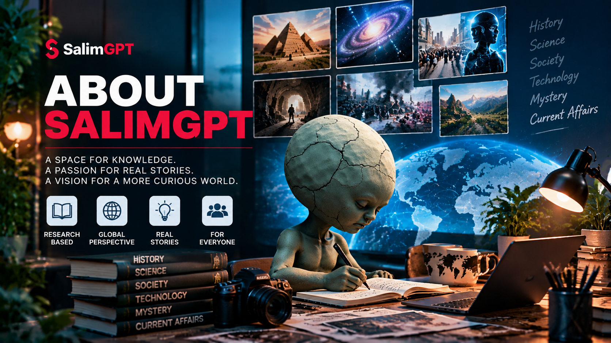

Documentary Media
Research and storytelling are developed for documentary publishing and audience discovery.
ABOUT SALIMGPT
SalimGPT is an independent multilingual documentary media brand built around research, evidence, human editorial judgment and responsible use of AI-assisted production tools.
Human-Led. AI-Assisted. Editorially Reviewed. Multilingual.

WHAT WE ARE
SalimGPT is a media project focused on documentary storytelling and research-based publishing. The platform uses technology, including artificial intelligence, as part of selected production workflows, but the identity of SalimGPT is documentary media rather than an AI model or conversational assistant.
Research direction, source assessment, fact-checking, editorial judgment, creative direction, review and final approval remain human responsibilities.
Research and storytelling are developed for documentary publishing and audience discovery.
Documentary development is intended to begin with research, source examination and contextual analysis.
SalimGPT is structured to make documentary work accessible through multiple language editions.
Human review and editorial responsibility remain central even when AI tools assist production.
THE NAME
“Salim” comes from founder Mohammad Salim. “GPT” remains part of the brand name because artificial intelligence can play a substantial assisting role in parts of the production process.
The name does not mean SalimGPT is an AI model or a product of OpenAI. It represents a documentary media identity in which human editorial direction works with AI-assisted production tools.
Read Why “SalimGPT”?HOW THE MODEL WORKS
AI tools may support tasks such as research assistance, drafting, language and localization work, visual development, synthetic media and other production activities where appropriate.
Those tools do not replace editorial responsibility. Decisions about evidence, accuracy, context, creative direction, publication and final approval remain human-led.
Human-Led, AI-AssistedEDITORIAL RESPONSIBILITY
SalimGPT separates technological assistance from editorial authority. Tools can support the workflow, while people remain accountable for what is researched, interpreted, approved and published.
Humans determine the subject, research questions, investigative direction and documentary purpose.
Sources and evidence require review before they can responsibly support documentary claims or context.
Factual claims are subject to human fact-checking and review rather than being accepted solely because a tool generated or summarized them.
Narrative structure, framing, visual choices and the documentary’s creative direction remain human-led.
Drafts and production outputs can be reviewed for accuracy, clarity, context and alignment with editorial standards.
Final publication decisions remain a human editorial responsibility.
MULTILINGUAL PLATFORM
SalimGPT Global acts as the central brand, discovery, trust and language gateway. Documentary publishing can continue through dedicated language editions so each audience can access content in its relevant language environment.
Bengali, English and Hindi editions are available. Additional language editions can be introduced as the multilingual platform expands.
DOCUMENTARY SCOPE
SalimGPT uses broad topic areas to help audiences begin exploring, while documentary subjects can extend into niche, local, emerging, interdisciplinary or highly specific researchable areas.
ABOUT SALIMGPT
Explore the background and development of the project.
Understand the meaning and reasoning behind the name.
Read the direction and long-term purpose of SalimGPT.
Learn about founder and director Mohammad Salim.
Explore the documentary, research and production approach.
Review SalimGPT’s transparency and editorial trust framework.